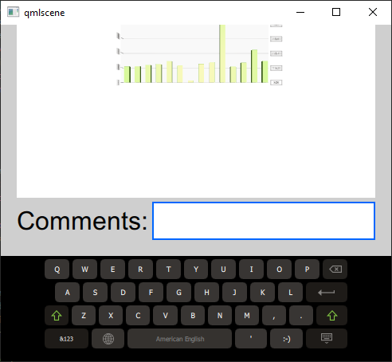
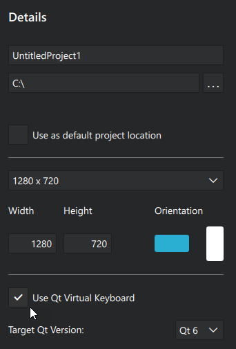
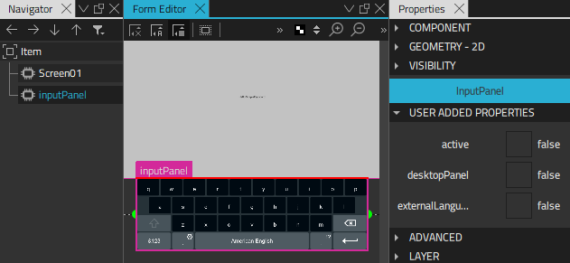

Simple Keyboard
Illustrates how to use a virtual keyboard in an application.
Simple Keyboard provides a virtual keyboard for entering text into several text fields. It uses functionality from the Qt Virtual Keyboard module.

The virtual keyboard is automatically displayed when users start entering text into Text Edit or Text Input components. For more information about using it, see Virtual Keyboard: User Guide.
To test the virtual keyboard, you need to select the  (Run) button to run the example on the desktop or a device. The keyboard is not available during preview.
(Run) button to run the example on the desktop or a device. The keyboard is not available during preview.
Using a Virtual Keyboard
First, we create an empty project, as described in Creating Projects. For the purposes of this example, we call the project SimpleKeyboard. We can use the default settings for other options, but we need to select the Use Qt Virtual Keyboard check box on the Define Project Details page.

The project wizard template adds the Qt Quick Virtual Keyboard module to the project and creates a component based on InputPanel in SimpleKeyboard.qml.

We then create a tabbed UI that contains fields for entering text, among other things. The virtual keyboard is automatically enabled for the text edit and text input controls.
Files: